aml_project). Fields in red are placeholders to complete before submission (edit docs/pdf_src/project_report.html and run bash docs/pdf_src/build.sh).Short-term traffic forecasting supports route guidance, ramp metering and incident response, but freeway speed is hard to predict: it is non-linear near the onset of congestion, strongly seasonal, spatially coupled along the road network, and frequently missing because detectors fail. This project studies one-hour-ahead speed forecasting on METR-LA, the standard benchmark of 207 loop detectors in Los Angeles sampled every five minutes for four months.
We first analyse data quality and structure. We quantify 8.1% missing readings, a weekly seasonal cycle, mean-reverting dynamics and spatial correlation that decays with road distance, and link each finding to a modelling decision. We then design 34 leakage-tested features in six groups, including a weekly-profile/anomaly decomposition and direction-aware upstream/downstream graph aggregates, and measure their value by cumulative ablation and permutation importance. Six forecasters of increasing complexity are compared under the standard protocol: Historical Average, Persistence, Ridge regression, histogram gradient boosting, an LSTM and Graph WaveNet, a spatio-temporal graph neural network with diffusion convolution and a self-adaptive adjacency matrix.
Graph WaveNet achieves a test MAE of 2.72 / 3.10 / 3.59 mph at 15 / 30 / 60 minutes (3.07 mph averaged over all 12 steps), within 0.03–0.06 mph of the published model and better than the published DCRNN at every horizon. Gradient boosting on the engineered features reaches 3.22 mph and comes within 0.07 mph of Graph WaveNet at 60 minutes. Diebold–Mariano tests with Newey–West variance confirm that Graph WaveNet's advantage is significant at every horizon (p < 0.001). Error analysis shows that forecasts are hardest in the evening rush and that the deep model is markedly less robust than the feature model when the latest input is missing. The trained model is deployed in an interactive web application.
Accurate short-term traffic forecasts underpin Intelligent Transportation Systems: route guidance and arrival-time estimates in navigation services, ramp metering and variable message signs in traffic management centres, and the planning of incident response [1]. A forecast 15 to 60 minutes ahead gives operators enough lead time to act before congestion builds.
Freeway speed is difficult to forecast for four reasons that are all visible in real detector data. First, dynamics are strongly non-linear near the onset of congestion, when speed can collapse from 65 to 20 mph within minutes. Second, the series are seasonal, with daily and weekly demand cycles. Third, congestion propagates spatially: queues grow backwards from bottlenecks, so the state of downstream sensors now predicts the state of upstream sensors later. Fourth, detectors fail, producing missing readings that must be handled without leaking future information.
The research field has moved from univariate statistical models (ARIMA [2, 3]) through feature-based machine learning [4] and recurrent neural networks [11] to spatio-temporal graph neural networks (GNNs) that treat the sensor network as a graph [5, 16, 18]. Published comparisons, however, often pit sophisticated GNNs against feature-poor classical baselines and rarely test whether differences in accuracy are statistically significant. This project addresses both gaps.
Given the last hour (12 five-minute steps) of speed readings from all 207 sensors of the METR-LA network and the road network connecting them, predict the speed at every sensor for each of the next 12 steps (5 to 60 minutes ahead). Evaluate accuracy with masked MAE, RMSE and MAPE at 15, 30 and 60 minutes under the standard chronological protocol, so results are directly comparable with the literature.
Section 2 reviews related work. Section 3 describes the dataset and exploratory analysis. Section 4 formalises the problem and the road graph. Section 5 presents the feature engineering, and Section 6 the models and statistical tests. Section 7 details the experimental protocol. Section 8 reports results, Section 9 discusses them, Section 10 describes the implementation and application, and Section 11 concludes.
Ahmed and Cook [2] first applied Box–Jenkins ARIMA models to freeway data, finding that ARIMA(0,1,3) outperformed moving-average and exponential-smoothing models. Williams and Hoel [3] gave a theoretical basis for seasonal ARIMA, showing that weekly-differenced traffic flow is stationary. These models are univariate and linear. They ignore the road network, react slowly to abrupt congestion and degrade quickly with horizon: on METR-LA, ARIMA's MAE rises from 3.99 mph at 15 minutes to 6.90 mph at 60 minutes [5].
Smith and Demetsky [4] showed that non-parametric regression (k-nearest neighbours) is competitive with ARIMA and neural networks and more robust in unusual conditions. Tree ensembles [34] and gradient boosting [7], including histogram-based variants such as LightGBM [8], capture non-linear interactions, but their accuracy depends heavily on feature engineering. In the DCRNN benchmark, support vector regression on raw lags reached only 6.72 mph at 60 minutes [5]. Part of this project tests the converse hypothesis: with carefully designed, leakage-free features, a gradient-boosted model can close much of the gap to deep models.
Lv et al. [10] applied stacked autoencoders to large-scale traffic flow prediction, and Ma et al. [11] showed that LSTM networks [12] capture long temporal dependencies in speed data better than earlier recurrent and statistical models. Encoder–decoder (sequence-to-sequence) LSTMs [13] predict a whole horizon at once and reach 3.44 / 3.77 / 4.37 mph at 15 / 30 / 60 minutes on METR-LA [5]. A fully connected LSTM, however, either ignores space (when shared per sensor) or flattens all sensors into one vector, which discards the road topology.
Spectral (ChebNet [14]) and first-order (GCN [15]) graph convolutions generalised convolutional networks to irregular graphs, and road networks are natural graphs. Table 1 summarises the main line of work.
| Model | Venue | Spatial module | Temporal module | MAE @60 |
|---|---|---|---|---|
| DCRNN [5] | ICLR 2018 | Bidirectional diffusion convolution on a directed distance graph | GRU sequence-to-sequence | 3.60 |
| STGCN [16] | IJCAI 2018 | Chebyshev graph convolution | Gated 1-D convolution | 4.59* |
| ASTGCN [17] | AAAI 2019 | Spatial attention + Chebyshev GCN | Temporal attention + convolution | – |
| Graph WaveNet [18] | IJCAI 2019 | Diffusion convolution + self-adaptive adjacency | Dilated causal gated convolution [19] | 3.53 |
| GMAN [20] | AAAI 2020 | Spatial attention | Temporal + transform attention | 3.44 |
| MTGNN [21] | KDD 2020 | Fully learned graph, mix-hop propagation | Dilated inception convolution | 3.49 |
| AGCRN [22] | NeurIPS 2020 | Node-adaptive parameters, learned graph | GRU | – |
| STID [23] | CIKM 2022 | None: spatial and temporal identity embeddings | MLP | 3.55 |
| STAEformer [24] | CIKM 2023 | Spatio-temporal adaptive embedding | Transformer | 3.34 |
Four lessons emerge. (1) Graph structure matters: DCRNN's diffusion convolution beats FC-LSTM by about 0.8 mph at 60 minutes. (2) The predefined graph is incomplete: Graph WaveNet's learned adjacency recovers dependencies the distance graph misses, an idea extended by MTGNN and AGCRN. (3) Recurrence is not required: convolutional and attention models train in parallel and avoid error accumulation. (4) Simple can be strong: STID shows that identity embeddings ("which sensor, what time, which weekday") recover much of the gain, which is consistent with our finding that the weekly profile dominates feature importance. Jiang and Luo [25] survey the area.
Few studies (i) give classical models a strong, leakage-free feature set, (ii) test significance with methods suited to overlapping, autocorrelated forecast windows, or (iii) examine robustness to missing inputs. We adopt Graph WaveNet as the representative GNN: it is accurate, convolutional (so it trains on a laptop GPU) and allows the predefined and learned graphs to be ablated separately. We pair it with strong feature baselines and add significance testing and error analysis.
METR-LA [5, 6] contains 5-minute average speeds from $N = 207$ loop detectors on Los Angeles County freeways, from 1 March to 27 June 2012 ($T = 34{,}272$ steps). It ships with sensor coordinates and 295,374 directed road-network distances, of which 11,753 are between sensors in the dataset. The HDF5 file was written by pandas 0.15 and cannot be read by current pandas, so its arrays are read directly with h5py. All statistics below are computed by scripts/run_eda.py.
| Property | Value |
|---|---|
| Sensors / time steps | 207 / 34,272 (119 days at 5-minute resolution) |
| Missing readings (value = 0) | 8.11% overall; 6.3–20.1% per sensor; 2,148 steps with all sensors missing |
| Observed speed | mean 58.5 ± 13.0 mph; median 63.2; range 0.3–70 (capped at 70) |
| Readings below 40 mph (congested) | 10.9% |
| Skewness | −1.99 (long left tail) |
| Graph | 1,722 non-zeros including self-loops (1,515 directed edges); 73.3% one-way; mean out-degree 7.3 |
| Split (windows) | 23,974 train / 3,425 validation / 6,850 test |
Missing observations are encoded as 0 mph, which is not a plausible freeway speed. They make up 8.1% of readings and arise from two mechanisms (Figure 1): network-wide outages, visible as vertical stripes (more than 50% of readings are missing on 26–27 March, 8 April, 25 April and 17 June), and long single-sensor failures, visible as horizontal streaks (the median sensor's longest gap is 381 steps, about 32 hours). Speeds are also capped at 70 mph by the detectors' processing (0.5% of readings sit exactly at the cap).
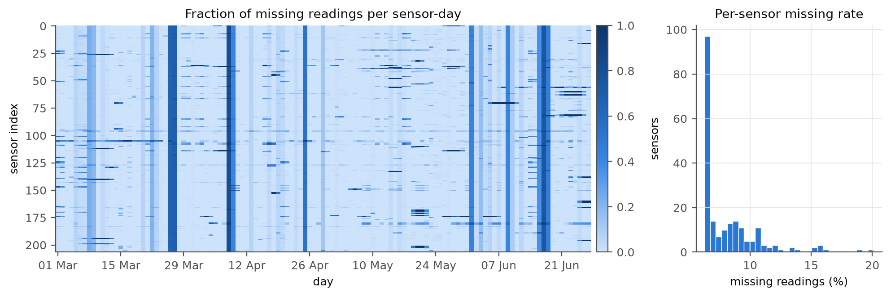
Three rules follow. (i) Missing targets are masked out of every loss and metric. (ii) Labels are never imputed. (iii) Where features need a value, only causal forward-filling (last observation carried forward) is used. Interpolation would use the next observation, which lies in the future at prediction time.
The distribution of observed speeds (Figure 2) is strongly left-skewed: most readings are free-flow (median 63.2 mph, 75th percentile 66.5), with a long tail of congested values (5th percentile 25.6, 1st percentile 13.1). The tail contains exactly the situations that matter most and are hardest to predict. A squared-error loss would be dominated by these rare large errors, so we train with absolute error, whose minimiser is the conditional median.
Figure 3 shows a typical week at one sensor: a sharp evening breakdown on each weekday, quiet weekends, and scattered missing readings recorded as zero.
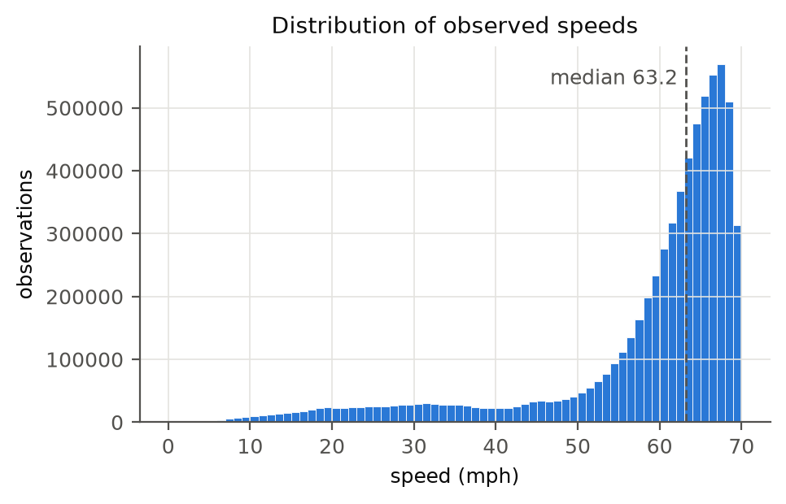
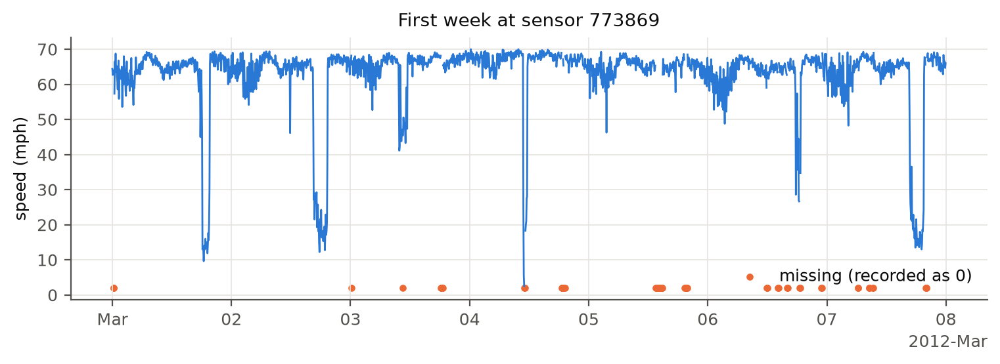
Weekday speeds show a pronounced evening rush hour (network mean 45.2 mph at 17:30) and a weaker morning dip, while weekends are flat (minimum 56.8 mph at 13:30) (Figure 4). The autocorrelation function (Figure 5) is 0.86 at a lag of 5 minutes and 0.57 at 1 hour. It peaks every 24 hours, and the 168-hour peak (0.40) exceeds the 24-hour peak (0.36), so the seasonality is weekly. Subtracting each sensor's weekly profile (fitted on training data) removes the daily peaks: the 24-hour autocorrelation falls from 0.36 to 0.07. The residual anomaly is a short-memory process (autocorrelation 0.41 at 1 hour). This additive decomposition, speed = weekly profile + anomaly, motivates several features.
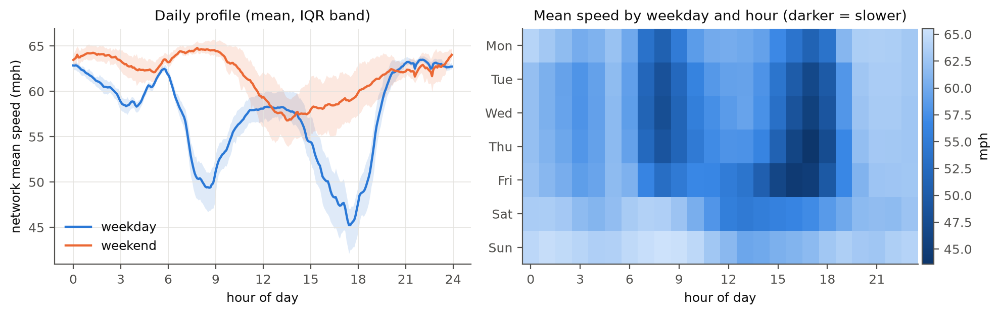
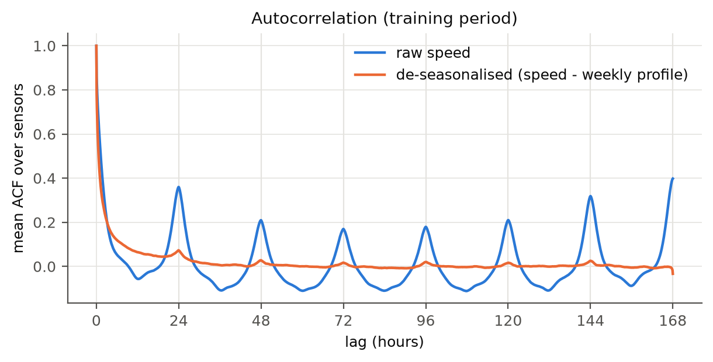
Augmented Dickey–Fuller tests [33] reject a unit root for all ten sampled sensors ($p < 10^{-24}$), so the series need no differencing. Speed is bounded and mean-reverting; its non-stationarity is seasonal, not a stochastic trend. Two consequences for modelling: recent lags are informative for short horizons, while at long horizons forecasts should revert towards the seasonal profile.
Pairwise correlation between sensors decays with road distance (Figure 6), and the decay persists after de-seasonalising, so it is not merely a shared daily cycle. Graph-connected sensors have a mean anomaly correlation of 0.27, against 0.07 for pairs with no recorded road path; the Spearman correlation between distance and anomaly correlation is −0.20. The distance graph is strongly directed: 73% of edges have no reverse edge, and five sensors have no outgoing edge (Figure 7). This justifies direction-aware spatial features and a learned adjacency.
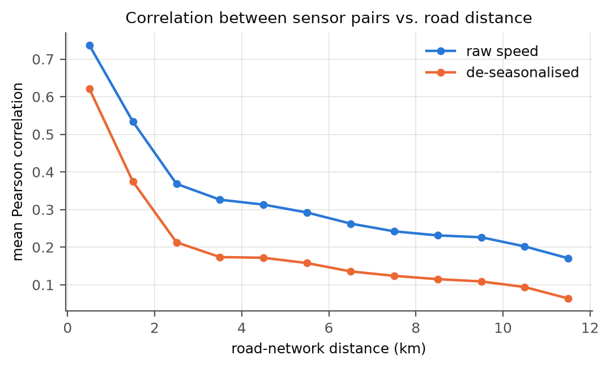
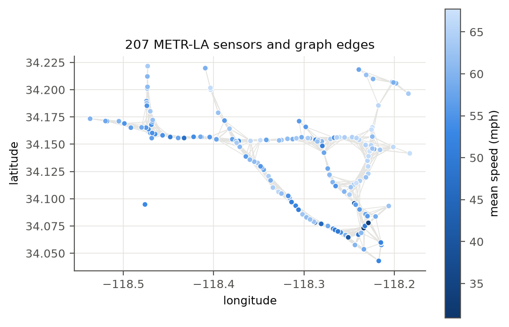
Following [5, 18], windows are split chronologically 70/10/20: training to 23 May, validation to 4 June and test to 27 June (Figure 8). Mean speed is stable across splits (58.6 / 58.9 / 57.8 mph), but the test period has more missing data (12.1% vs 7.1% in training). This mild, realistic shift motivates the robustness analysis in Section 8.7.
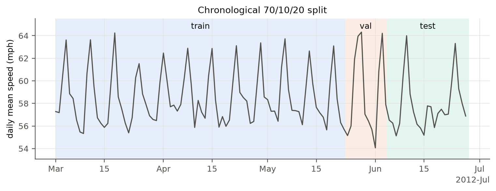
| Finding | Decision |
|---|---|
| 8.1% missing, encoded as 0; outages and long failures | Masked loss and metrics; causal forward-fill for features; missing-data features; robustness analysis |
| Lag-1 autocorrelation 0.86 | 12 lag features; persistence baseline |
| Weekly seasonality (168 h ACF 0.40 > 24 h 0.36) | Weekly profile, anomaly and calendar features; Historical Average baseline |
| Stationary (ADF), mean-reverting | No differencing; direct multi-horizon strategy |
| Spatial correlation beyond seasonality; directed graph | Upstream/downstream features; diffusion GNN with a learned adjacency |
| Left-skewed, capped distribution | Absolute-error (MAE) loss |
| More missing data in the test period | Confidence intervals; robustness to missing inputs |
Let $\mathcal G = (\mathcal V, \mathcal E, W)$ be a directed graph with $N = |\mathcal V| = 207$ sensors and weighted adjacency $W \in \mathbb R^{N\times N}$, and let $X_t \in \mathbb R^{N\times C}$ hold the $C = 2$ input signals at time $t$ (speed and time of day). We learn
by minimising the masked mean absolute error
The mask removes missing targets. Each training example is a window anchored at the last input step $t$.
Following [5], edge weights come from a thresholded Gaussian kernel of the road distance $d_{ij}$ from sensor $i$ to sensor $j$:
where $\sigma$ is the standard deviation of all finite distances. The kernel converts distance into similarity, and the threshold keeps the graph sparse: 1,722 non-zeros, exactly matching the original preprocessing (verified by a unit test). Because $d_{ij} \ne d_{ji}$ in general, $W$ is asymmetric. Two random-walk transition matrices are derived from it: the forward matrix $P_f = D_O^{-1}W$ (row-normalised by out-degree), which propagates information in the direction of travel, and the backward matrix $P_b = D_I^{-1}W^\top$, which propagates it against the direction of travel.
The tabular models (Ridge and gradient boosting) predict $y_{t+h,i}$, the speed of sensor $i$ at horizon $h$, from features of the anchor time $t$; each $(t, i)$ pair is one row. Let $\tilde x$ be the causally forward-filled speed, $\tau(t) \in \{0, \dots, 2015\}$ the time-of-week slot, and $\mu_i(\tau)$ the weekly profile: sensor $i$'s mean observed training speed in slot $\tau$. Three principles apply.
| Group | # | Features |
|---|---|---|
| Lags | 12 | $\tilde x_{t-k,i}$ for $k = 0, \dots, 11$ |
| Window statistics | 7 | 1- and 3-step differences; rolling mean, standard deviation and minimum over 1 hour; number of missing readings in the window; missing-now flag |
| Calendar | 4 | sin and cos of the time of day of $t+h$; day of week; weekend flag |
| Weekly profile | 3 | $\mu_i(\tau(t+h))$; $\mu_i(\tau(t))$; anomaly $a_{t,i}$ |
| Spatial | 5 | $(P_f\tilde x_t)_i$, $(P_b\tilde x_t)_i$, $(P_f a_t)_i$, $(P_b a_t)_i$, $(P_f(\tilde x_t - \tilde x_{t-3}))_i$ |
| Sensor | 3 | training mean, standard deviation and missing rate of sensor $i$ |
Gradient boosting is retrained as groups are added one at a time and scored by validation MAE (Figure 9, Table 5). The calendar and weekly-profile groups give the largest gains, especially at 60 minutes, where validation MAE falls from 4.36 mph (lags only) to 3.52 mph. Spatial features add a further 0.05–0.09 mph at every horizon. The sensor statistics add a small final gain.
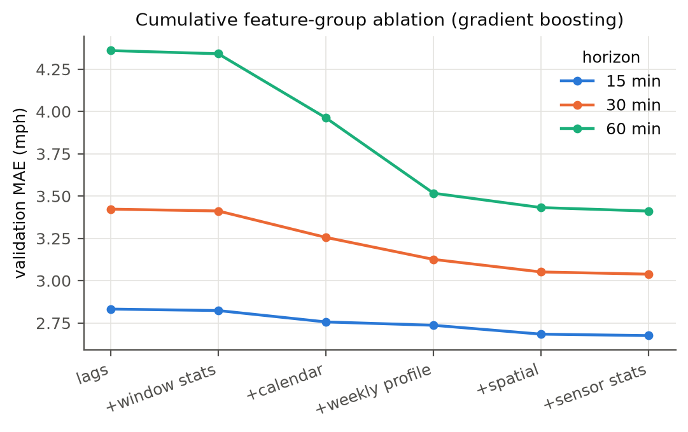
| Groups | 15 min | 30 min | 60 min |
|---|---|---|---|
| Lags | 2.832 | 3.423 | 4.360 |
| + window stats | 2.823 | 3.412 | 4.341 |
| + calendar | 2.756 | 3.256 | 3.962 |
| + weekly profile | 2.736 | 3.126 | 3.517 |
| + spatial | 2.684 | 3.052 | 3.432 |
| + sensor stats (all) | 2.675 | 3.038 | 3.411 |
Individual features are assessed by permutation importance (the increase in validation MAE when one column is shuffled) on 60,000 held-out rows (Figure 10). Unlike impurity-based importance, it is measured on held-out data and is not biased towards high-cardinality features. profile_target is the most important feature at both horizons (+5.28 mph at 15 minutes, +6.75 mph at 60 minutes). Recent-state features matter far more at the short horizon: lag_0 costs 2.41 mph at 15 minutes but only 0.51 at 60, and roll_mean drops from 1.26 to 0.15. At 60 minutes, the downstream anomaly (down_anomaly, +0.19 mph) is the third most important feature, which supports the direction-aware spatial design. Because permutation importance splits credit among correlated features (the lags and rolling mean are near-duplicates), the group-level ablation above is the more reliable measure of a group's value.
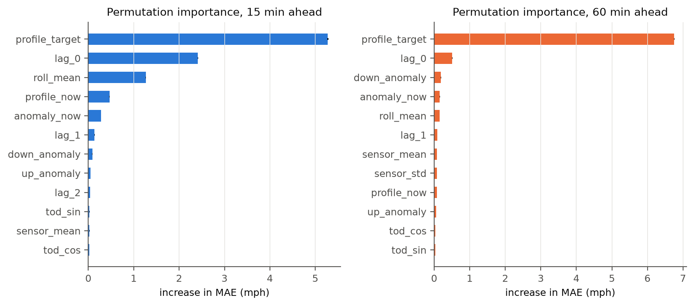
Six forecasters form a ladder of increasing complexity, so that each step's gain can be attributed: seasonality only, recency only, linear and non-linear use of engineered features, learned temporal features, and learned spatio-temporal features.
Historical Average (HA) predicts $\mu_i(\tau(t+h))$, a sample estimate of $\mathbb E[x \mid \text{sensor}, \text{time of week}]$. Persistence predicts $\tilde x_{t,i}$ for every horizon. It is the optimal forecast for a random walk (martingale), and its error grows with $h$ because speed is mean-reverting.
For each horizon, $\hat\beta = \arg\min_\beta \lVert y - X\beta\rVert_2^2 + \lambda\lVert\beta\rVert_2^2 = (X^\top X + \lambda I)^{-1}X^\top y$ on standardised features [9]. The lag features are highly collinear (lag-1 autocorrelation 0.86), so $X^\top X$ is ill-conditioned. The $\ell_2$ penalty shrinks along low-variance eigen-directions, trading a little bias for a large reduction in variance. $\lambda$ is selected on validation.
Gradient boosting [7] builds an additive model $F_M(x) = F_0 + \sum_{m=1}^M \nu\, h_m(x)$. Each regression tree $h_m$ is fitted to the pseudo-residuals $r_m = -\partial \ell(y, F)/\partial F\,\vert_{F_{m-1}}$. For the absolute loss $\ell = \lvert y - F\rvert$, $r_m = \operatorname{sign}(y - F_{m-1})$, and leaf values are set to the median residual in each leaf, which makes the fit robust to outliers. We use the histogram variant [8, 31]: features are binned into at most 255 quantile bins, so split search costs $O(\text{bins})$ per feature rather than $O(n\log n)$. Shrinkage $\nu$, the leaf count, the minimum leaf size, an $\ell_2$ leaf penalty and early stopping control the bias–variance trade-off.
The tabular models fit an independent model for each $h \in \{1, \dots, 12\}$ instead of iterating a one-step model. Recursive forecasting feeds predictions back as inputs, so errors accumulate; the direct strategy avoids this and lets each horizon weight features differently [30]. The deep models apply the same idea by predicting all 12 steps jointly from one output layer.
A two-layer LSTM [12] with 64 hidden units is shared across sensors. Each sensor's 12-step history $(x_s, \text{tod}_s)$ is encoded by
and an MLP maps the final hidden state to all 12 outputs. The additive cell update keeps gradients from vanishing. Because weights are shared and no information crosses sensors, the LSTM isolates the value of temporal learning without spatial information.
Graph WaveNet [18] stacks $L = 8$ layers (4 blocks × 2). Each layer combines a gated temporal convolution with a diffusion graph convolution, plus a residual path and a skip connection to the output head (Figure 11).
src/traffic/models/gwnet.py (300,952 parameters).Gated dilated causal convolution. For a hidden representation $\mathcal X$,
where $\star_d$ is a causal 1-D convolution over time with kernel 2 and dilation $d$. The sigmoid gate controls information flow, like an LSTM gate, but all time steps are computed in parallel. With dilations 1 and 2 repeated over four blocks, the receptive field is $1 + 4\cdot(1 + 2) = 13 \ge 12$, so every output sees the whole input hour.
Diffusion graph convolution. Traffic is modelled as a bidirectional random walk on $\mathcal G$. With the support set $\mathcal P = \{P_f, P_b, \tilde A\}$,
so node $j$ receives $\sum_i (P^k)_{ij}\mathcal H_i$, the mass a $k$-step random walk carries into $j$. The concatenated terms are mixed by a 1×1 convolution, which implements the $\Theta$s.
Self-adaptive adjacency. The road graph is incomplete (five sensors have no outgoing edge, and parallel freeways are not linked by distance), so the model also learns
end-to-end. ReLU prunes weak links, and the row softmax makes $\tilde A$ a valid transition matrix of rank at most 10, which regularises the $O(N^2)$ parameterisation.
Output. Skip connections from all layers are summed, passed through two 1×1 convolutions with ReLU, and mapped to all 12 horizons at once.
Diebold–Mariano test [26]. For models $A$ and $B$ at horizon $h$, let $d_s = \overline{\lvert e^A_s\rvert} - \overline{\lvert e^B_s\rvert}$ be the loss differential of test window $s$, averaged over observed sensors. Under $H_0: \mathbb E[d_s] = 0$,
where $\hat\sigma^2_{\mathrm{LR}}$ is a Newey–West long-run variance [27] with Bartlett weights and $h$ lags, which accounts for the autocorrelation of overlapping windows. A negative statistic means $A$ is more accurate. Block bootstrap [28]. 95% confidence intervals for the overall MAE resample whole test days with replacement (1,000 replicates), preserving within-day dependence.
We follow the standard METR-LA protocol [5, 18]: 12 input steps predict 12 output steps; windows are split chronologically 70/10/20 (23,974 / 3,425 / 6,850); and MAE, RMSE and MAPE are computed in mph over non-zero targets at horizons 3, 6 and 12 (15, 30 and 60 minutes) and averaged over all 12 steps. The scaler, weekly profile and sensor statistics are fitted on the training period only. The test split is used once, after all model selection.
Deep models receive two channels per sensor and step: z-scored speed (mean 58.58, standard deviation 12.83, from observed training values) and time of day in [0, 1). Following the reference pipeline, missing inputs keep their raw value 0, which z-scores to −4.57, a distinctive value the network can learn to recognise. The model predicts in normalised units and the trainer converts back to mph, so the loss is in mph. Tabular models receive the 34 features of Section 5. Consecutive windows share 11 of 12 steps, so the tabular models use every fourth training window (about 1.15 million observed rows per horizon) with little loss of information. Validation windows are split by parity: even windows select hyper-parameters, and odd windows drive early stopping.
| Model | Settings |
|---|---|
| Ridge | $\lambda \in \{10^{-2}, 1, 10^2, 10^3\}$ (selected: $10^3$); standardised features; one model per horizon |
| Gradient boosting | absolute-error loss; (learning rate, leaves) ∈ {(0.1, 31), (0.1, 127), (0.05, 63)} (selected: 0.1, 127); minimum leaf 100; $\ell_2 = 1$; up to 400 iterations (800 for 0.05) with early stopping (patience 20); one model per horizon |
| LSTM | 2 layers, 64 units, dropout 0.1, MLP head; Adam, learning rate $10^{-3}$, weight decay $10^{-4}$, batch 32, up to 60 epochs, patience 10 |
| Graph WaveNet | 4 blocks × 2 layers, kernel 2, channels 32 / 32 / 256 / 512 (residual / dilation / skip / end), diffusion order 2, embedding dimension 10, dropout 0.3; Adam, learning rate $10^{-3}$, weight decay $10^{-4}$, gradient clipping 5, batch 32, up to 35 epochs, patience 8 |
| Graph WaveNet ablation | as above, exactly 8 epochs for each of four spatial variants |
| Component | Details |
|---|---|
| Hardware | Apple M3, 8 GB unified memory; deep models on the GPU via PyTorch MPS |
| Language | Python 3.14 |
| Deep learning | PyTorch 2.14 [32] |
| Machine learning | scikit-learn 1.9 [31] (Ridge, HistGradientBoostingRegressor, permutation importance) |
| Data and statistics | NumPy 2.5, pandas 3.0, SciPy 1.18, statsmodels 0.15, h5py 3.16 |
| Visualisation and app | Matplotlib 3.11; Streamlit 1.66, Altair 6.3, pydeck 0.9 |
| Testing | pytest (23 tests) |
The batch size of 32 (instead of the published 64) fits the 8 GB of unified memory. Each Graph WaveNet epoch took about 3 minutes. Seeds are fixed (NumPy and PyTorch, seed 0).
Figure 12 shows the training curve. Validation MAE fell from 3.33 mph after the first epoch to a minimum of 2.809 mph at epoch 25. The run was interrupted after epoch 26 of the planned 35 (patience 8 had not been triggered). All Graph WaveNet results use the best-validation checkpoint from epoch 25. Validation error had nearly plateaued, and test accuracy is within 0.03–0.06 mph of the published model (Section 8), so a complete run would be expected to change results only marginally. Training error lies above validation error throughout because dropout (0.3) is active during training and BatchNorm uses batch statistics.
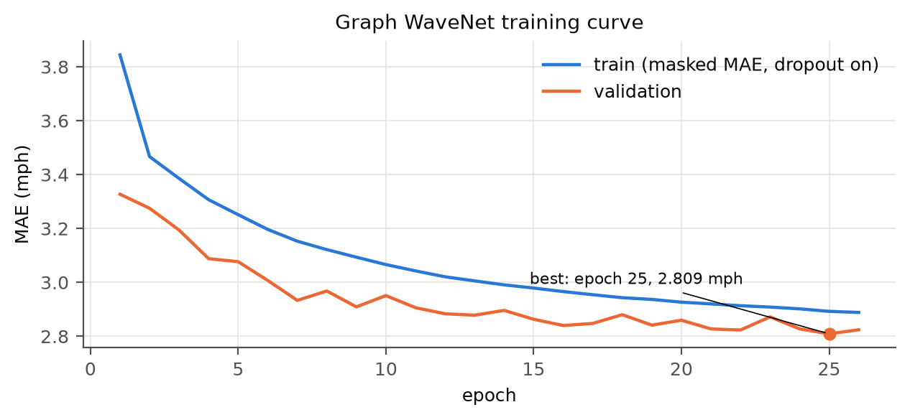
The LSTM and the four-variant Graph WaveNet spatial ablation are implemented and scripted (scripts/run_deep_experiments.sh) but had not been run at the time of writing because of compute time (about 3 hours on the available hardware). Their rows are therefore absent from the results below; scripts/evaluate.py adds them automatically once their predictions exist.
| Model | 15 min | 30 min | 60 min | ||||||
|---|---|---|---|---|---|---|---|---|---|
| MAE | RMSE | MAPE | MAE | RMSE | MAPE | MAE | RMSE | MAPE | |
| Historical Average | 4.19 | 7.85 | 13.0% | 4.19 | 7.85 | 13.0% | 4.19 | 7.85 | 13.0% |
| Persistence | 3.50 | 6.42 | 8.6% | 4.21 | 8.05 | 10.9% | 5.38 | 10.34 | 14.5% |
| Ridge (features) | 3.37 | 5.71 | 8.9% | 3.78 | 6.60 | 10.6% | 4.09 | 7.33 | 12.0% |
| Gradient Boosting (features) | 2.89 | 5.56 | 7.8% | 3.29 | 6.54 | 9.4% | 3.66 | 7.45 | 11.1% |
| Graph WaveNet (ours) | 2.72 | 5.18 | 7.0% | 3.10 | 6.24 | 8.5% | 3.59 | 7.42 | 10.4% |
| HA [5] | 4.16 | 7.80 | 13.0% | 4.16 | 7.80 | 13.0% | 4.16 | 7.80 | 13.0% |
| FC-LSTM [5] | 3.44 | 6.30 | 9.6% | 3.77 | 7.23 | 10.9% | 4.37 | 8.69 | 13.2% |
| DCRNN [5] | 2.77 | 5.38 | 7.3% | 3.15 | 6.45 | 8.8% | 3.60 | 7.60 | 10.5% |
| STGCN [16]† | 2.88 | 5.74 | 7.6% | 3.47 | 7.24 | 9.6% | 4.59 | 9.40 | 12.7% |
| Graph WaveNet [18] | 2.69 | 5.15 | 6.9% | 3.07 | 6.22 | 8.4% | 3.53 | 7.37 | 10.0% |
† As reported by Wu et al. [18].
Graph WaveNet is the most accurate model on MAE and MAPE at every horizon, with an average MAE of 3.07 mph over all 12 steps, 4.5% below gradient boosting (3.22), 17% below Ridge (3.69) and 27% below the Historical Average (4.19). It is within 0.03 / 0.03 / 0.06 mph of the published Graph WaveNet and better than the published DCRNN at all three horizons. Our Historical Average (4.19 vs 4.16) and graph (1,722 non-zeros) match the original preprocessing closely, which validates the pipeline. With engineered features, gradient boosting beats the published deep FC-LSTM at every horizon and is within 0.07 mph of Graph WaveNet at 60 minutes. On 60-minute RMSE, Ridge (7.33), Graph WaveNet (7.42) and gradient boosting (7.45) are virtually tied: at long horizons, large misses during unexpected congestion dominate RMSE for every model.
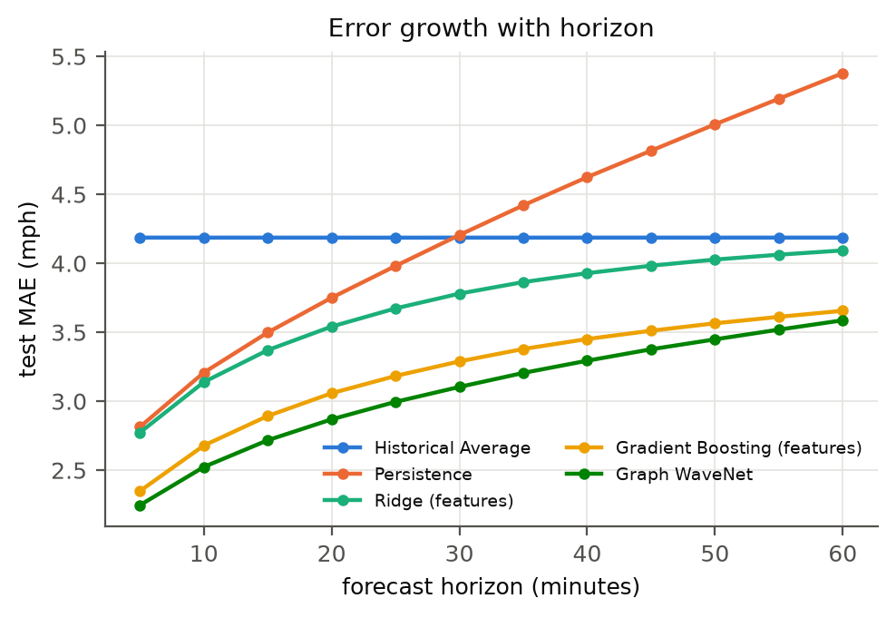
Figure 13 shows the characteristic shapes. Persistence is competitive at 5 minutes but its error grows almost linearly, crossing the flat Historical Average at about 30 minutes. This is the signature of a mean-reverting process: the present is informative briefly, after which the seasonal mean is the better guess. The learned models combine both sources of information and are lowest at every step. The gap between Graph WaveNet and gradient boosting is largest at short horizons (6.1% at 15 minutes) and narrows to 1.9% at 60 minutes, where both models lean on the seasonal profile.
| A vs B | Horizon | DM | p |
|---|---|---|---|
| GWN vs Gradient Boosting | 15 min | −25.74 | <10⁻⁴ |
| 30 min | −15.05 | <10⁻⁴ | |
| 60 min | −3.59 | 0.0003 | |
| GWN vs Ridge | 15 min | −65.98 | <10⁻⁴ |
| 30 min | −38.76 | <10⁻⁴ | |
| 60 min | −20.34 | <10⁻⁴ | |
| Gradient Boosting vs Ridge | 15 min | −74.80 | <10⁻⁴ |
| 30 min | −47.34 | <10⁻⁴ | |
| 60 min | −29.73 | <10⁻⁴ |
| Model | MAE | 95% CI |
|---|---|---|
| Historical Average | 4.19 | 3.89 – 4.41 |
| Persistence | 4.24 | 3.96 – 4.43 |
| Ridge | 3.69 | 3.47 – 3.83 |
| Gradient Boosting | 3.22 | 3.01 – 3.36 |
| Graph WaveNet | 3.07 | 2.89 – 3.20 |
Every pairwise difference is significant. Graph WaveNet also beats Persistence and the Historical Average at every horizon (|DM| ≥ 17.8, p < 10⁻⁴). The marginal bootstrap intervals of Graph WaveNet and gradient boosting overlap because both models find the same days hard; the paired Diebold–Mariano test, which uses per-window differences, removes this shared variation and is the appropriate test.
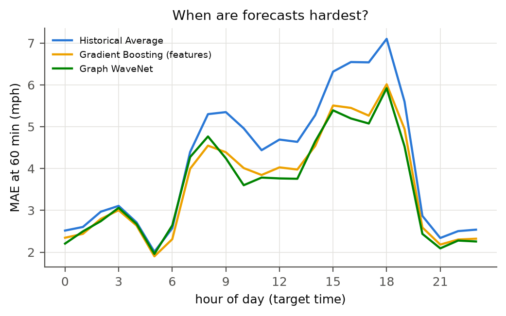
Errors follow the daily cycle of congestion (Figure 14). They are lowest at night (about 2 mph), rise with the morning rush (peaking around 4.5–4.8 mph at 08:00–09:00), and peak in the evening (about 6 mph at 18:00). These are the periods when congestion forms and dissolves, the hardest events to time precisely an hour in advance. Graph WaveNet's advantage over gradient boosting is clearest late in the morning and through midday (10:00–13:00) and in the evening peak; at the onset of the morning rush (08:00) and around 14:00 gradient boosting is slightly better, so neither model dominates at every hour.
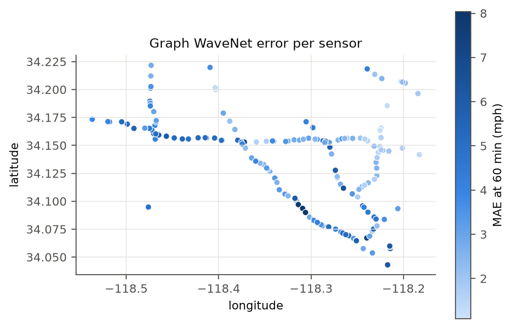
Errors are spatially concentrated (Figure 15). Sensors on the free-flowing outer branches have 60-minute MAE near 2 mph, while a cluster on the south-eastern diagonal corridor and at junctions reaches 7–8 mph. These are the frequently congested stretches visible as dark points in the sensor map (Figure 7). Per-sensor errors are saved in results/tables/sensor_mae_gwnet.csv.
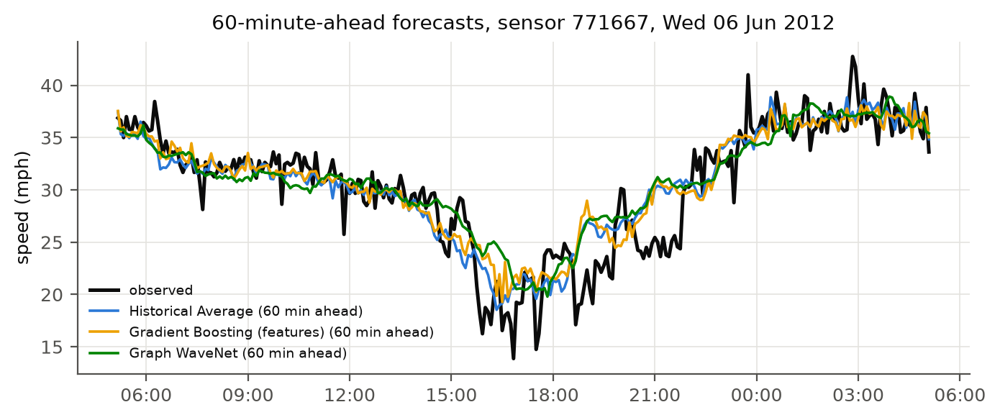
Figure 16 shows typical behaviour 60 minutes ahead. All models track the slow afternoon decline. During the evening breakdown, the learned models anticipate the drop but smooth over its sharpest dips: a forecast an hour ahead cannot time individual stop-and-go waves, and the MAE loss favours the conditional median over extreme values.
| Model | Latest observed | Latest missing | Increase |
|---|---|---|---|
| Historical Average | 4.17 | 4.70 | +13% |
| Persistence | 5.31 | 7.89 | +49% |
| Ridge | 4.06 | 5.23 | +29% |
| Gradient Boosting | 3.63 | 4.50 | +24% |
| Graph WaveNet | 3.54 | 5.36 | +52% |
When the latest reading is missing, every model degrades, but Graph WaveNet degrades most (+52%) and falls behind gradient boosting (5.36 vs 4.50 mph) and even Ridge. The feature models see a forward-filled value plus explicit missing-data features, whereas the network sees a raw zero (−4.57 after scaling) and must infer the gap. Such cases are only 2.8% of test targets, so the effect on overall accuracy is small, but it is the clearest weakness of the deep model and a direct target for future work.
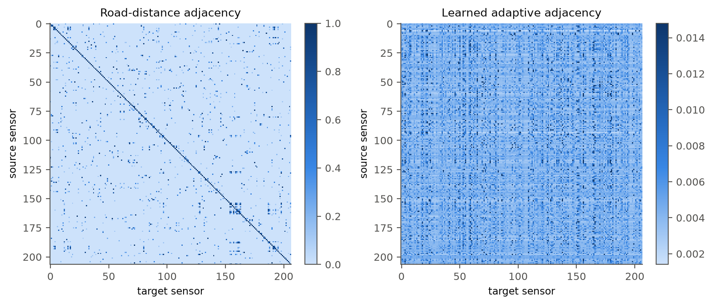
The learned matrix $\tilde A$ (Figure 17) is close to uniform after 25 epochs. Its mean row entropy is 5.23 nats against a maximum of $\ln 207 = 5.33$, and its top-5 links per sensor coincide with road-graph edges at 3.1%, slightly below the 3.5% expected at random (lift 0.87). The learned graph has therefore not recovered road structure; it acts as a mild, near-global mixing term on top of the road-distance supports, which carry the explicit spatial structure. Longer training (the original uses 100 epochs) and the planned ablation would show whether it sharpens and how much it contributes.
Graph WaveNet learns spatio-temporal patterns directly from raw speeds. Its diffusion convolutions propagate information along and against the direction of travel, so a slowdown downstream informs upstream forecasts, and its gated temporal convolutions model the full input hour. The gain over gradient boosting is largest at short horizons, where the precise current state of the network matters most, and smallest at 60 minutes, where both models lean on the seasonal profile. That the published accuracy is reproduced within a few hundredths of a mph after only 25 epochs indicates that the implementation is faithful.
A gradient-boosted model with 34 well-designed features reaches 3.22 mph, beats the published FC-LSTM at every horizon, and is within 0.07 mph of Graph WaveNet at 60 minutes. The ablation attributes most of that strength to the seasonal decomposition (calendar and weekly-profile features) and a further consistent gain to direction-aware spatial aggregates. This mirrors STID's finding [23] that identity and time embeddings recover much of a GNN's gain. Feature-based models also have practical advantages: they train on a CPU, their behaviour is explainable through feature importance, and they handle missing inputs more gracefully (Section 8.7).
For deployment, Graph WaveNet offers the best accuracy and predicts all 207 sensors and 12 horizons in a single pass (the full test set in about 16 seconds on the laptop GPU, against about 84 seconds for 12 gradient-boosting models on the CPU). Because it is weakest when inputs are missing, a robust system would either forward-fill or mask missing inputs before inference, or fall back to the feature model for affected sensors.
The project is an installable Python package, traffic (src/traffic/), with one script per experiment.
| Module | Responsibility |
|---|---|
data.py | Read the legacy HDF5 file with h5py; sensor IDs and locations; road-distance matrix; Gaussian adjacency; transition matrices; chronological split; scaler fitted on training data |
features.py | Causal forward-fill, time-of-week slots, weekly profile, the 34 features by group |
metrics.py | Masked MAE/RMSE/MAPE at standard horizons; Diebold–Mariano test; per-window errors |
models/ | Historical Average and Persistence; per-horizon wrapper for scikit-learn regressors; LSTM; Graph WaveNet with switchable spatial components |
trainer.py | Device selection (CUDA, then MPS, then CPU); on-GPU window sampler; masked-MAE training loop with clipping, early stopping and checkpointing |
eda.py, plotting.py | EDA statistics and figures; shared plot style |
scripts/ | run_eda.py, run_classical.py, train_deep.py, run_deep_experiments.sh, evaluate.py |
One efficiency detail matters for training on a laptop. The full normalised series (34,272 × 207 × 2) is moved to the GPU once, and each batch is built by indexing it with anchor offsets, so there is no per-sample Python loop or host-to-device copy.
Correctness-critical properties are covered by 23 pytest unit tests, all passing (Appendix C). The most important ones guard against leakage: features must not change when future values are overwritten, forward-filling must be causal, and the scaler and weekly profile must use only the training period. Others check that the split is chronological and matches the literature sizes, that the graph has exactly 1,722 non-zeros and row-stochastic transition matrices, that windows align, that metrics ignore zero targets, and that every model produces correctly shaped outputs.
The trained Graph WaveNet is deployed in a Streamlit application (app/streamlit_app.py, run with streamlit run app/streamlit_app.py). It loads the dataset and checkpoint once, then replays the test period. A forecast settings form (date, time, sensor, map horizon, Run forecast) is complemented by quick actions: stepping by 5 minutes or 1 hour, jumping to the morning rush, midday, evening rush or night, an automatic Play through the day mode, and shortcuts to the slowest sensor, the sensor forecast to slow down most, the worst-forecast sensor or a random one. Each forecast is a single forward pass of about 6 ms on the GPU.
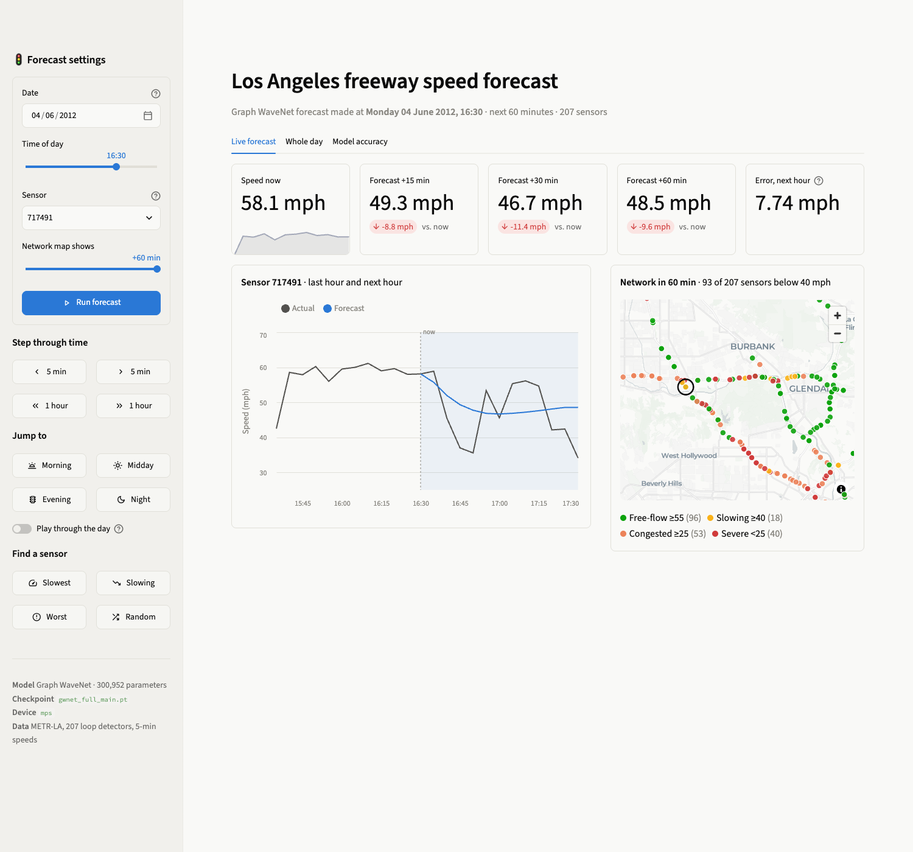
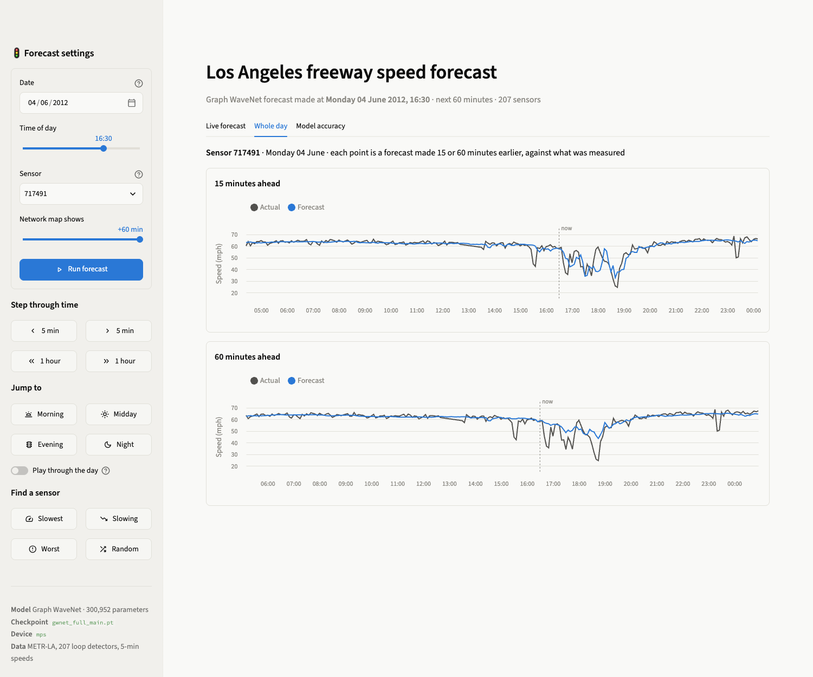
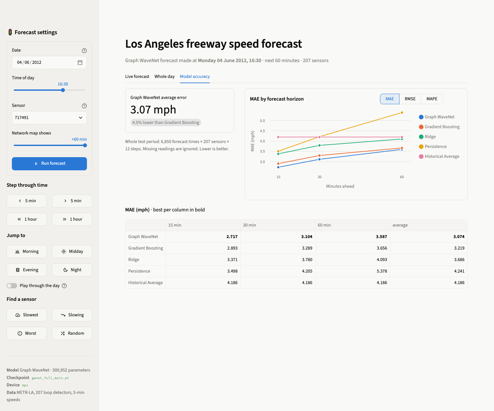
Charts are built with Altair (hover tooltips and crosshairs) and the map with pydeck (click a sensor to select it). Congestion bands (free-flow ≥ 55 mph, slowing 40–55, congested 25–40, severe < 25) always appear with their labels and counts, so colour never carries meaning alone. The page supports light and dark themes.
This project studied one-hour-ahead freeway speed forecasting on METR-LA through a controlled ladder of six forecasters. A data-quality and exploratory analysis quantified missingness, weekly seasonality, mean reversion and distance-dependent spatial correlation, and translated each into a modelling decision. A leakage-tested set of 34 features, built on a weekly-profile/anomaly decomposition and direction-aware graph aggregates, let gradient boosting reach 3.22 mph average MAE. Graph WaveNet achieved 2.72 / 3.10 / 3.59 mph at 15 / 30 / 60 minutes (3.07 mph average), reproducing published results within 0.03–0.06 mph, and its advantage over every other model is statistically significant at every horizon. Error analysis located the remaining difficulty in rush-hour transitions and congested corridors, and revealed that the deep model is markedly less robust than the feature model when the latest input is missing. The trained model is available in an interactive application.
Future work.
| Model | MAE (mph) | RMSE (mph) | MAPE (%) |
|---|---|---|---|
| Historical Average | 4.186 | 7.851 | 13.03 |
| Persistence | 4.241 | 8.188 | 10.96 |
| Ridge (features) | 3.686 | 6.463 | 10.28 |
| Gradient Boosting (features) | 3.219 | 6.429 | 9.22 |
| Graph WaveNet | 3.074 | 6.210 | 8.41 |
| λ | Val MAE |
|---|---|
| 0.01 | 3.6301 |
| 1 | 3.6301 |
| 100 | 3.6296 |
| 1000 | 3.6261 |
| Learning rate | Leaves | Iterations | Val MAE |
|---|---|---|---|
| 0.1 | 31 | 400 | 3.0666 |
| 0.1 | 127 | 400 | 3.0385 |
| 0.05 | 63 | 800 | 3.0413 |
Validation MAE is nearly flat across λ, so Ridge is insensitive to regularisation strength at this sample size. All gradient-boosting configurations used their full iteration budget, which suggests that slightly more iterations could help marginally. The final gradient-boosting models took 587 s to train (12 horizons, CPU) and 84 s to predict the test set.
| File | Tests |
|---|---|
test_data.py | shapes and sensor order; split chronological and disjoint; split sizes match the literature; scaler uses training data only; adjacency properties (1,722 non-zeros, unit diagonal, row-stochastic transitions); Gaussian-kernel threshold; window alignment; steps per day |
test_features.py | forward-fill is causal; profile ignores missing values; profile uses the training period only; feature shapes with no NaNs; no future leakage; feature-group subsets |
test_metrics.py | masking ignores zero targets; horizon selection; Diebold–Mariano sign convention |
test_models.py | baseline shapes; LSTM shape; Graph WaveNet variant shapes; the no-graph variant keeps sensors independent; masked loss ignores missing values; per-horizon regressor |
python3 -m venv .venv && source .venv/bin/activate
pip install -e ".[dev]"
pytest # 23 tests
python scripts/run_eda.py # EDA figures and statistics
python scripts/run_classical.py # HA, Persistence, Ridge, gradient boosting (~40 min)
bash scripts/run_deep_experiments.sh # Graph WaveNet, LSTM, ablation (~4 h on an Apple M3)
python scripts/evaluate.py # tables, significance tests, figures
streamlit run app/streamlit_app.py # interactive application
bash docs/pdf_src/build.sh # rebuild these PDFs